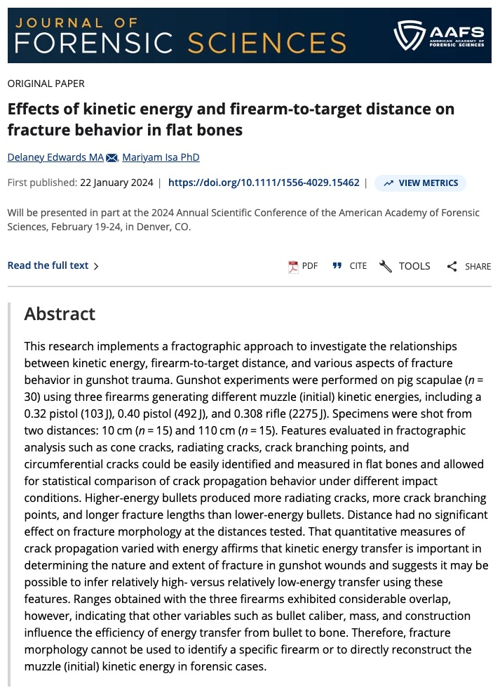
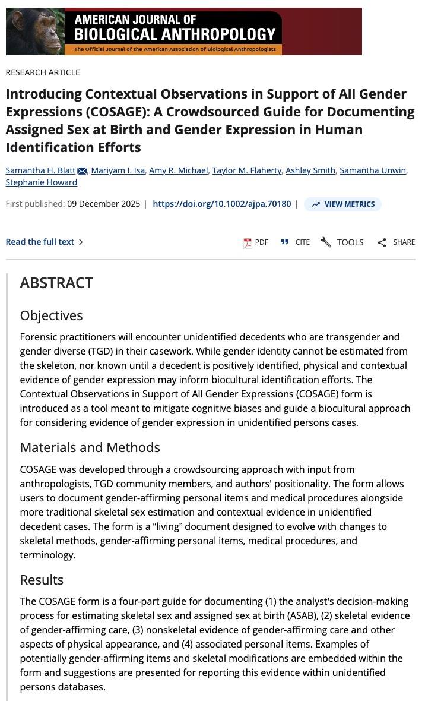

ARID Lab
Hub
The ARID Lab advances forensic anthropology through a tripartite mission: high-level research on skeletal trauma and identification equity, graduate and undergraduate training, and medicolegal casework services for West Texas law enforcement.

Our Mission
We conduct research, provide graduate academic training, and offer forensic anthropology and archaeology casework services to requesting law enforcement agencies and medicolegal professionals. Our work is supported by a broader team of anthropologists with specialized expertise in skeletal analysis and archaeological methods.
Medicolegal Casework Services
Medicolegal Significance — identifying suspected skeletal material as human or non-human and evaluating relevance to the death investigation system
Biological Profile — estimating sex, population affinity, age-at-death, and stature of unidentified remains, as well as documenting potentially individualizing information
Trauma Analysis — documenting and evaluating skeletal trauma to provide information about the timing and mechanism of injury
Search & Recovery — applying archaeological techniques to assist law enforcement in the systematic search for and recovery of human remains and associated evidence
"Forensic skeletal trauma analysis has experienced a recent shift from emphasizing typological and morphological descriptions to interpretation based on bone's mechanical properties and its response to force and different loading regimes."
Affiliated Faculty
Our interdisciplinary team brings together diverse expertise in forensic archaeology, osteology, bioarchaeology, and digital methods to support every investigation.

Dr. Brett A. Houk
Professor of Archaeology
ARID Role: Forensic archaeology, total data station mapping, photogrammetry
Recognition: National Geographic Explorer, President's Excellence in Research Professor

Dr. Arthur Durband
Assoc. Professor · Chair of SASW
ARID Role: Osteological analysis, paleoanthropology, virtual anthropology

Dr. Anna Novotny
Assoc. Professor · UG Program Director
ARID Role: Excavation, osteological analysis, identification, bioarchaeology

Dr. Giacomo Fontana
Asst. Professor · Director, DARE Lab
ARID Role: Drone & pedestrian survey, GIS, remote sensing, computational archaeology
In Action

Annual Lab Retreat, 2023

Fieldwork: Site Excavation


Notable Publications

"Projectile Kinetic Energy and Cranial Fracture Initiation: A Forensic Fractography Approach"
Co-authored with student D.F. Edwards, this study applies material science principles to characterize ballistic trauma patterns in cranial bone, establishing objective metrics for forensic fracture interpretation.
Read Paper arrow_outward
"Contextual Observations in Support of All Gender Expressions (COSAGE): A Biocultural Coding Guide"
Co-developed with the Trans Doe Task Force, this crowdsourced guide provides standardized protocols for documenting physical and contextual evidence of gender-affirming care in unidentified remains cases, addressing systemic bias in forensic identification.
Read Paper arrow_outwardJoin the Lab
We are looking for motivated students who are passionate about the intersection of biology, society, and justice. Whether you are an undergraduate curious about lab work or a prospective graduate student, we want to hear from you.
Application Window
M.A. applications are typically reviewed in December for the following Fall cohort. Undergraduate assistants are recruited on a rolling basis.
Visit the Official ARID Lab PageFrequently Asked Questions
What skills should I have before applying?
While a background in anthropology or biology is helpful, we value curiosity, attention to detail, and a commitment to ethical research above all else. We provide training for all technical skills.
Is the lab LGBTQ+ and BIPOC friendly?
Inclusion is the core of our lab identity. We actively foster a safe, supportive environment for all identities and backgrounds. We believe diversity is our greatest research strength.
Do you offer remote research opportunities?
Depending on the project, we often have computational or literature-based roles that can be performed remotely. Contact Dr. Isa at mari.isa@ttu.edu for details.